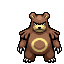
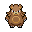

Pokédex / #217

Ursaring #217
Normal
With its ability to distinguish any aroma, it unfailingly finds all food buried deep underground.
Generation 2 · Johto

Stats
| Attack | 130 | |
|---|---|---|
| Defense | 75 | |
| Sp. Atk | 75 | |
| Sp. Def | 75 |
In the wild
| Wild level | 85–95 |
|---|---|
| HP | 90 |
| Experience | 15 |
| Egg groups | Field |
Evolution
- Evolves from Teddiursa at level 45.
Moves
| Level | Move | Type | Category | Power | Energy | Cooldown | Effect | |
|---|---|---|---|---|---|---|---|---|
| 1 | Tackle | Normal | Physical | 15 | 15 | 1s | Tackle is one of the most common and basic moves a Pokemon learns. It deals damage with no additional effects. | |
| 5 | Scratch | Normal | Physical | 40 | 40 | 6s | Scratch inflicts damage and has no secondary effect. | |
| 10 | Lick | Ghost | Physical | 30 | 30 | 5s | Lick deals damage and has a 30% chance of paralyzing the target. | |
| 15 | Fury Swipes | Normal | Physical | 18 | 45 | 9s | Fury Swipes inflicts damage, hitting 2-5 times per use. | |
| 20 | Slash | Normal | Physical | 70 | 70 | 11s | Slash deals damage and has an increased critical hit ratio. | |
| 25 | Scary Face | Normal | Status | 1 | 40 | 15s | Scary Face lowers the target's Speed by two stages. | |
| 30 | Rest | Psychic | Status | – | 100 | 180s | User sleeps for 5 seconds, but user is fully healed. | |
| 35 | Metal Claw | Steel | Physical | 50 | 50 | 8s | Metal Claw deals damage and has a 10% chance of raising the user's Attack by one stage. | |
| 40 | Seismic Toss | Fighting | Physical | 80 | 80 | 12s | Seismic Toss deals damage and has no secondary effect. | |
| 50 | Crunch | Dark | Physical | 80 | 80 | 12s | Crunch deals damage and has a 20% chance of lowering the target's Defense by one stage. | |
| 55 | Hyper Voice | Normal | Special | 90 | 100 | 21s | Hyper Voice inflicts damage and has no secondary effect. | |
| 60 | Counter | – | Physical | – | 100 | 90s | When hit by a Physical Attack, user strikes back with 2x power. | |
| 65 | Hammer Arm | Fighting | Physical | 100 | 100 | 15s | Hammer Arm does damage, then lowers the user's Speed by one level. | |
| 70 | Superpower | Fighting | Physical | 120 | 120 | 20s | Superpower deals damage but lowers the user's Attack and Defense by one stage each after attacking. | |
| 75 | Headlong Rush | Ground | Physical | 120 | 125 | 27s | The user smashes into the target in a full-body tackle. It lowers the user's Defense and Special Defense by one stage each after attacking. |
Field abilities
DigRock ClimbStrengthFindCutRock SmashHeadbutt
Special abilities
GutsQuick Feet
Egg moves
Belly DrumChip AwayClose CombatCounterCross ChopCrunchDouble-EdgeFake TearsMetal ClawNight SlashPlay RoughSeismic TossSleep TalkTake DownYawn
Technical machines
Aerial AceAvalancheBideBrick BreakBulk UpDefense CurlDouble EdgeDouble TeamDynamic PunchEarthquakeFire PunchFocus PunchFury CutterHeadbuttHyper BeamIce PunchMimicMud SlapRageRain DanceRestRoarRock SlideRock TombSubstituteSwiftSwords DanceTauntThunder PunchToxicZap Cannon
Drops
| Item | Amount | Chance | |
|---|---|---|---|
| bunch of wheat | 1–6 | 93.8% | |
| bitten apple | 1 | 83.3% | |
| bamboo leaves | 1–3 | 75% | |
| bunch of sugar cane | 1–3 | 75% | |
| bamboo stick | 1–3 | 75% | |
| razor fang | 1–3 | 53.6% | |
| cutting fang | 1 | 15% | |
| exquisite silk | 1 | 15% | |
| red apple | 1–5 | 5% | |
 | ursaring doll | 1 | 0.1% |
| Love Plate | 1 | 0.05% | |
| TM 52 | 1 | 0.01% | |
| held silk scarf | 1 | 0.01% |